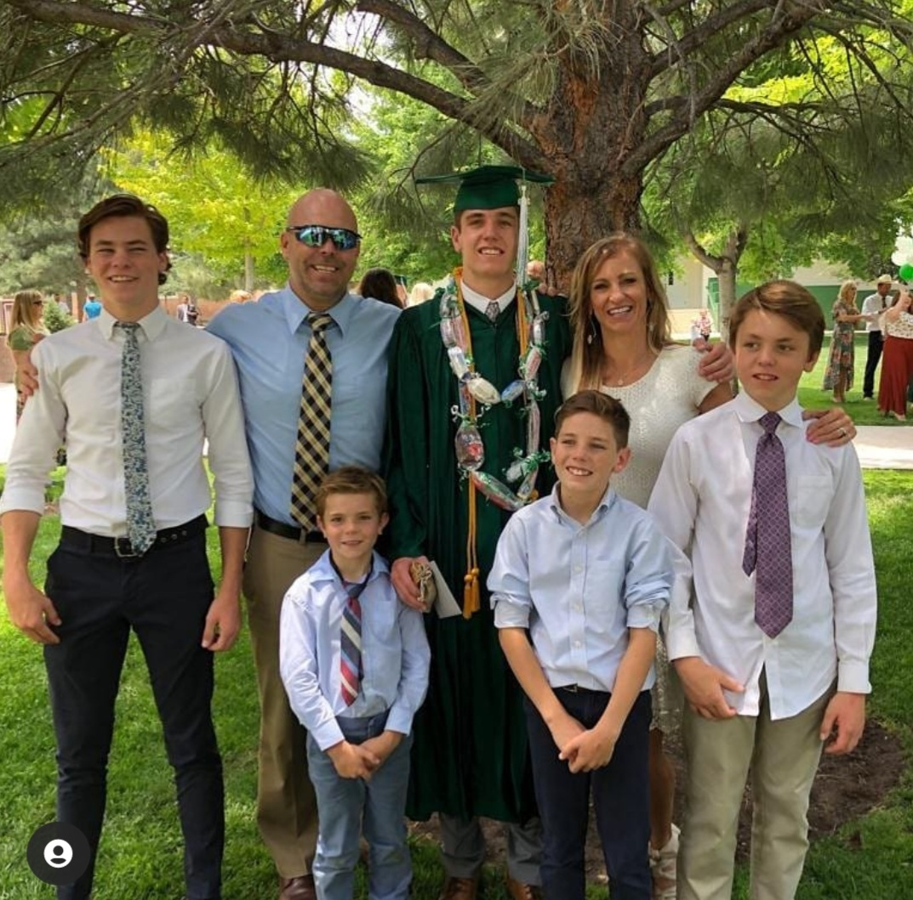
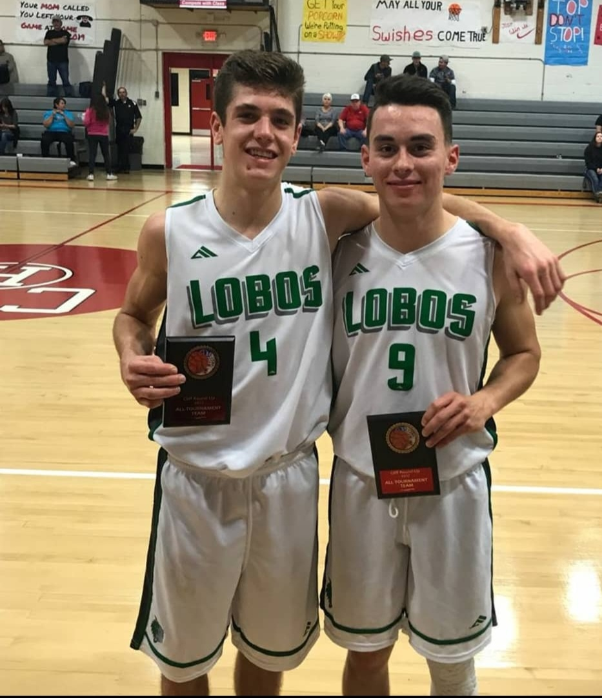

Education
-
Academia Juarez
- 2013-2019
- Preparatory Certificate
-
Brigham young
- 2021-Present
- Undergraduate
- Finance Major
Skills
- Hardworking
- Responsible
- Enthusiastic
- Personable
- Motivated
- Fun
Life Story
I grew up in a small town in Chihuahua Mexico. I am the oldest child of 5. I learned many important life lessons in my youth. One important value that my dad taught me is hard work. My dad would have us work at the farm every summer. I learned how to do different jobs, such as, prune trees, plow rows in fields with a GPS tractor, and transplant pecan trees with a massive front loader.
I have always loved sports and doing crazy things. My favorite sport is basketball. I fell in love with the game of basketball since I was a year old! I also love riding dirt bikes, spearfishing, cliff jumping, and more. I'm always down for a good time!
Resume
As I explained above my first unofficial job was on the farm in Mexico, but when I moved up to Provo, I worked for 7 months at Blue Fire Leads. There I was a call floor representitive and learned how to overcome objections and qualify customers for solar, windows, and roofing quotes.
I now currently work designing and listing t-shirts to sell for my print on demand t-shirt business. It has been tough but I have loved the experience of starting a business on my own and have learned so much doing so.